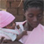
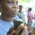
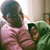
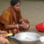
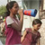

Bill & Melinda Gates Foundation Short Film Initiative
In 2010, Sundance Institute's Documentary Film Program was invited by the Bill & Melinda Gates Foundation to create six short films––working with independent documentary filmmakers––on several of the foundation's priority issue areas: global health; financial services for the poor; and improving US education. So began an exciting partnership designed to harness the power of documentary storytelling to create greater awareness around key global issues. Sundance DFP staff was fortunate to be able to call on the skills and commitment of many outstanding filmmakers already working in the topic areas. The resulting Sundance | Bill & Melinda Gates Foundation collection of films, featured below, are global, presenting remarkable stories of challenges and solutions. Filmed in Bangladesh, India, Haiti, Kenya, Congo (DRC), Lesotho as well as the United States, the six films illustrate personal stories of communities leading vaccination drives; empowering the poor with safe and affordable means to manage their money, success at an urban American charter school and an intimate portrait of parenting while HIV positive. Each film is linked to a community of stakeholders, and represents the work of some of the leading documentarians working today. Join us in discovering more about the issues and the storytellers.
–– Cara Mertes, Director, Documentary Film Program
Gates Foundation Short Films

Dear Mothers
Directed by Lisa Cole, produced by...

Making Money Mobile
Directed by Jonathan Stack and...

PHELA (Life)
Directed by Teboho Edkins and...

Small Change = Big Idea
Directed and produced by Glenn Baker

The Revolutionary Optimists
Directed by Maren Grainger-Monsen and...
YouthBuild
Directed and produced by Annie...
Dear Mothers
Directed by Lisa Cole, produced by Mark Monroe and Fisher Stevens, and executive produced by Amy Lehman
The extraordinary challenges and hard-won successes around maternal and newborn healthcare in Moba, a region along the shore of Lake Tanganyika in southern Africa, demonstrates the power of basic maternal health education in saving lives.
Lisa Cole, Director California born and Arkansas bred, Lisa began her film career as a camera assistant on music videos, commercials, and independent feature films. She segued her production experience into development at FOX Studios’ Twentieth Television division concentrating on made-for-television movies before delving into the world of writing original works. In 2000, she began producing and writing for broadcast television, including the critically-acclaimed VH1 series Behind the Music as well as numerous other specials including A&E’s The Magic Touch of Harry Potter. Currently, she is at work producing and writing a one-hour documentary called Do It for the Band: Sex, Drugs and Sisterhood on the Sunset Strip set to air in April on VH1 as part of their Rock Doc Series.
Mark Monroe, Producer An award-winning documentary filmmaker and freelance producer/writer, Mark has more than 15 years of experience in all facets of production – writing, producing, directing, and editing. After more than a decade in television, Mark began writing for the big screen. His on-screen credits as a writer include: The Tillman Story, The Cove, Once in a Lifetime: The Extraordinary Story of the New York Cosmos, Amazing Journey: The Story of The Who, and Morning Light.